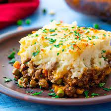

Shepherd Pie

Description
This is a delicious hambuger and potato mess to feed
the whole family. The best part is there is always left
overs!
Ingredients
Meat Filling:
- 2 tablespoons olive oil
- 1 cup chopped yellow onion
- 1 lb. 90% lean ground beed or ground lamb
- 2 teaspoons dried parsley leaves
- 1 teaspoon dried rosemary leaves
- 1 teaspoon dried thyme leaves
- 1/2 teaspoon salt
- 1/2 teaspoon ground black pepper
- 1 tablespoon Worcestershire sauce
- 2 garlic cloves minced
- 2 tablespoons all purpose flour
- 2 tablespoons tomato paste
- 1 cup beef broth
- 1 cup frozen mixed peas & carrots
- 1/2 cup frozen corn kernels
Potato topping:
- 1 1/2-2 lb. russet potatoes -about 2 large potatoes peeled and cut into 1 inch cubes
- 8 tablespoons unsalted butter -1 stick
- 1/3 cup half & half
- 1/2 teaspoon garlic powder
- 1/2 teaspoon salt
- 1/4 teaspoon ground black and pepper
- 1/4 cup parmesan cheese
Steps
Make the Meat Filling
- Add the oil to a large skillet and place it over medium-high
heat for 2 minutes. Add the onions. Cook 5 minutes, stirring
occasionally.
- Add the ground beef (or ground lamb) to the skillet and break
it apart with a wooden spoon. Add the parsley, rosemary, thyme,
salt, and and pepper. Stir well. Cook for 6-8 minutes, until the
meat is browned, stirring occasionally.
- Add the Worcestershire sauce and garlic. Stir to combine. Cook for 1 minute.
- Add the flour and tomato paste. Stir until well incorporated and
no clumps of tomato paste remain.
- Add the broth, frozen peas and carrots, and frozen corn. Bring the
liquid to a boil then reduce to simmer. Simmer for 5 minutes, stirring occasionally.
- Set the meat mixture aside. Preheat oven to 400 degrees F.